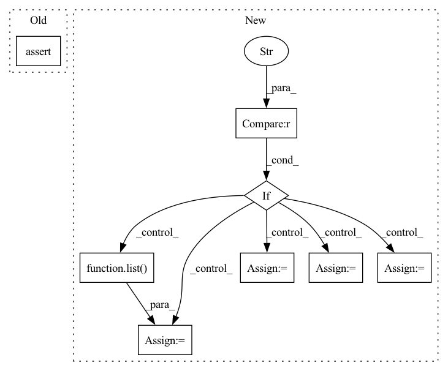

Pattern ID :38735

Before Change
y = pt.tensor(conf["formation_energy"][()], dtype=pt.float64)
assert y.shape == ()
assert conf["forces"].attrs["units"] == "eV/Å"
dy = -pt.tensor(conf["forces"], dtype=pt.float32)
assert dy.shape == pos.shape
After Change
mols = None
load_confs = None
if version == "1.0":
assert "name" in h5.attrs
mols = h5.items()
load_confs = self._load_confs_1_0
elif version == "2.0":
assert len(h5.keys()) == 1
mols = list(h5.values())[0].items()
load_confs = self._load_confs_2_0
else:
raise RuntimeError(f"Unsuported layout verions: {version}")
In pattern: SUPERPATTERN
Frequency: 3
Non-data size: 8
Instances
Fragment ID: 110748571
Project Name: torchmd/torchmd-net
Commit Name: d23e6500f2cef1fa56d6c99ce5fdb983f1379bca
Time: 2022-10-28
Author: peastman@stanford.edu
File Name: torchmdnet/datasets/ace.py
M Class Name: Ace
N Class Name: Ace
M Method Name: sample_iter(2)
N Method Name: sample_iter(1)
M Parent Class: Dataset
N Parent Class: Dataset
M File Name: torchmdnet/datasets/ace.py
N File Name: torchmdnet/datasets/ace.py
M Start Line: 72
M End Line: 123
N Start Line: 144
N End Line: 206
'>
Before Change
features=Mock(sampling_rate=16000, frame_shift=0.01, num_frames=2000),
supervisions=supervisions)
mask = cut.supervisions_feature_mask()
assert (mask[:50] == 1).all()
assert (mask[50:] == 0).all()
def test_mixed_cut_audio_mask(self, supervisions):
After Change
features=Mock(sampling_rate=16000, frame_shift=0.01, num_frames=2000),
supervisions=supervisions)
mask = cut.supervisions_feature_mask(use_alignment_if_exists=alignment)
if alignment == "word":
ones = np.index_exp[list(chain(range(0,10), range(20,40), range(60,80)))]
zeros = np.index_exp[list(chain(range(10,20), range(40,60), range(80,200)))]
else:
ones = np.index_exp[list(chain(range(0,50), range(60,80)))]
zeros = np.index_exp[list(chain(range(50,60), range(80,200)))]
assert (mask[ones] == 1).all()
assert (mask[zeros] == 0).all()
'>
Fragment ID: 110748626
Project Name: lhotse-speech/lhotse
Commit Name: 56bc347c5261e4736a24550fd3a0d66329e85c26
Time: 2021-05-31
Author: r.desh26@gmail.com
File Name: test/cut/test_masks.py
M Class Name: TestMasksWithSupervisions
N Class Name: TestMasksWithSupervisions
M Method Name: test_cut_features_mask(3)
N Method Name: test_cut_features_mask(2)
M Parent Class:
N Parent Class:
M File Name: test/cut/test_masks.py
N File Name: test/cut/test_masks.py
M Start Line: 64
M End Line: 64
N Start Line: 87
N End Line: 99
'>
Before Change
cut = Cut("cut", start=0, duration=2, channel=0, recording=Mock(sampling_rate=16000),
supervisions=supervisions)
mask = cut.supervisions_audio_mask()
assert (mask[:8000] == 1).all()
assert (mask[8000:] == 0).all()
def test_cut_features_mask(self, supervisions):
After Change
cut = Cut("cut", start=0, duration=2, channel=0, recording=Mock(sampling_rate=16000),
supervisions=supervisions)
mask = cut.supervisions_audio_mask(use_alignment_if_exists=alignment)
if alignment == "word":
ones = np.index_exp[list(chain(range(0,1600), range(3200,6400), range(9600,12800)))]
zeros = np.index_exp[list(chain(range(1600,3200), range(6400,9600), range(12800,32000)))]
else:
ones = np.index_exp[list(chain(range(0,8000), range(9600,12800)))]
zeros = np.index_exp[list(chain(range(8000,9600), range(12800,32000)))]
assert (mask[ones] == 1).all()
assert (mask[zeros] == 0).all()
'>
Fragment ID: 110748548
Project Name: lhotse-speech/lhotse
Commit Name: 56bc347c5261e4736a24550fd3a0d66329e85c26
Time: 2021-05-31
Author: r.desh26@gmail.com
File Name: test/cut/test_masks.py
M Class Name: TestMasksWithSupervisions
N Class Name: TestMasksWithSupervisions
M Method Name: test_cut_audio_mask(3)
N Method Name: test_cut_audio_mask(2)
M Parent Class:
N Parent Class:
M File Name: test/cut/test_masks.py
N File Name: test/cut/test_masks.py
M Start Line: 56
M End Line: 56
N Start Line: 73
N End Line: 84